Written by a young paratrooper. In war.
Not to tell a story of heroism — but because he had to get out what was inside.
A portion of every copy supports reservists returning home.
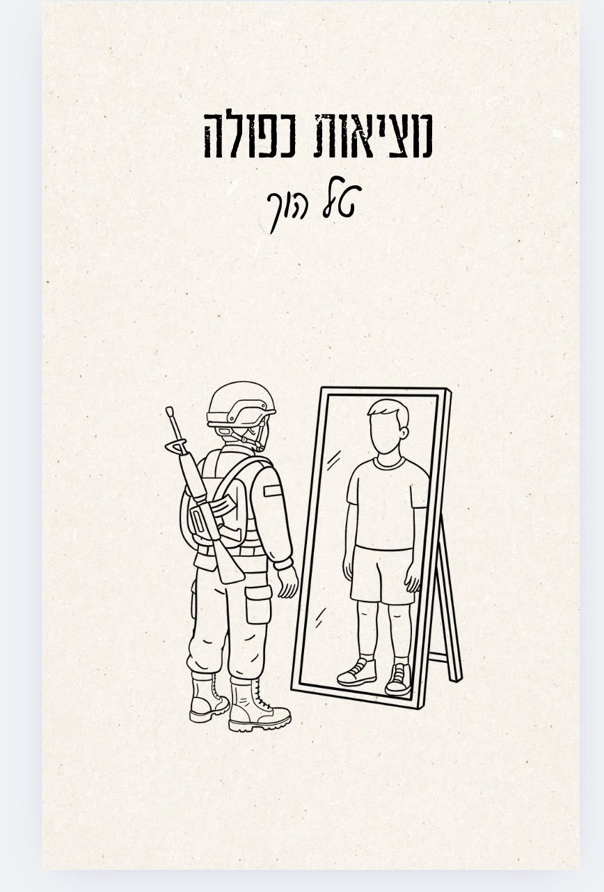
Dual Reality was scripted by a soldier and written in war. It holds two parallel worlds at once: serving in the IDF reserves since October 7th — through Gaza, Lebanon and beyond — and the quiet, ordinary life waiting back home.
"A digest of undigested emotions."
Tal wrote it between operations, scribbling on scraps of paper and stuffing them into his vest, not to be seen for months. The writing is raw, because it had to be. His patriotism is organic; his love for the land and its people is private, not declarative.
Short poems and original illustrations, written by a self-declared "simple soldier."
Every poem is paired with a hand-drawn illustration — quiet, spare, drawn in the same places the words were written.
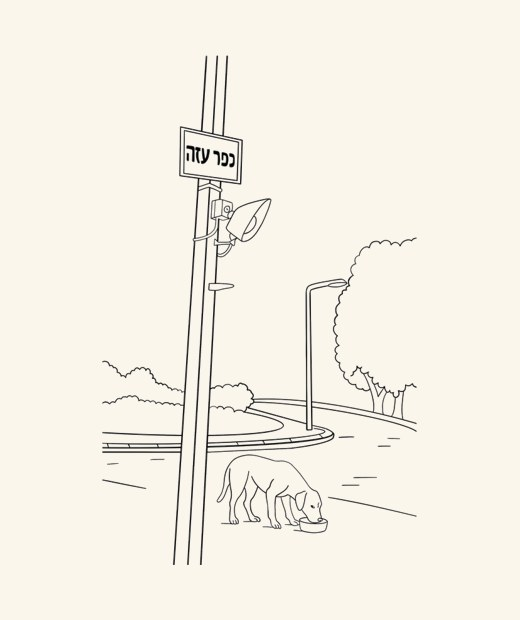
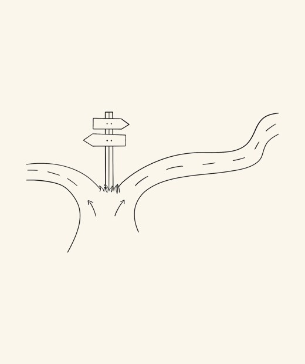
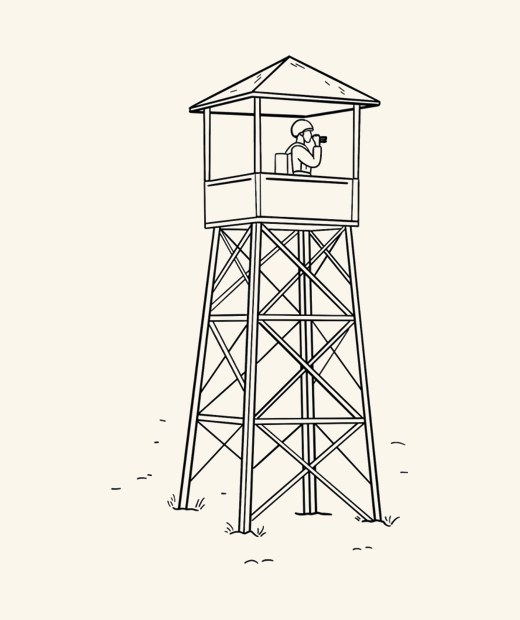
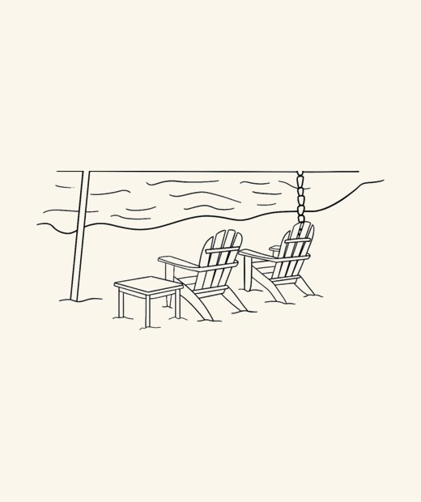
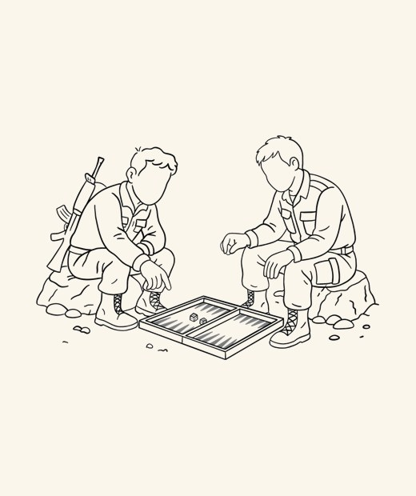
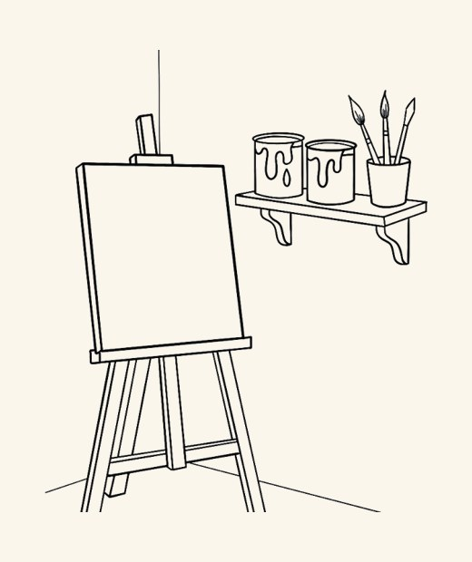
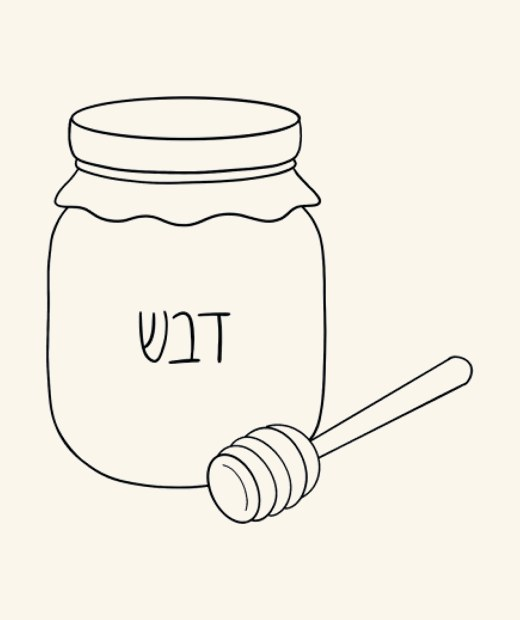
The book pairs quiet hand-drawn illustrations with the moments that inspired them. Behind each drawing is something Tal actually lived.
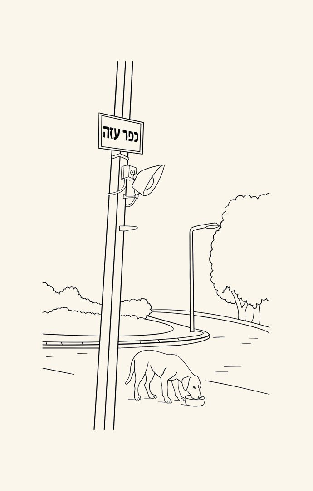
The illustration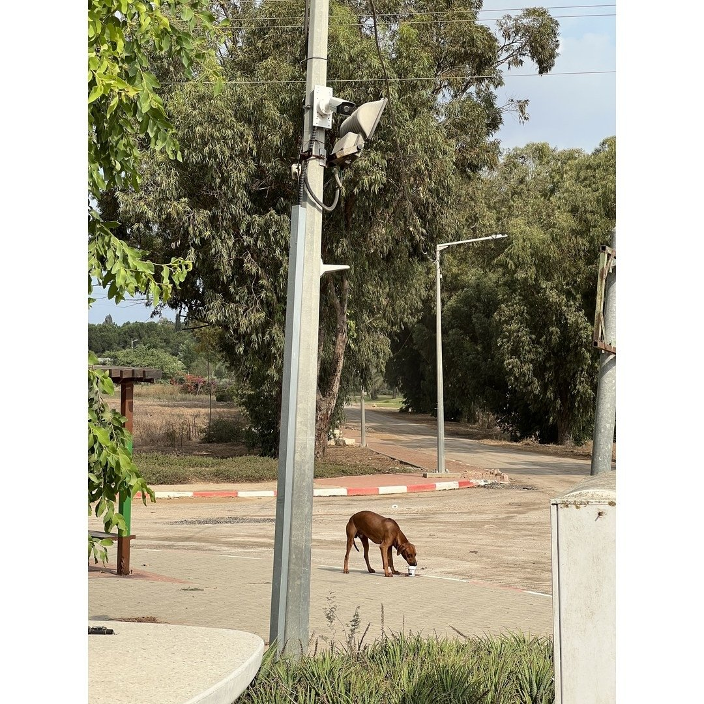
The real momentA lost dog in the ruins of Kfar Aza. He gave it water, opened a can of food, and apologized for letting it down, too.
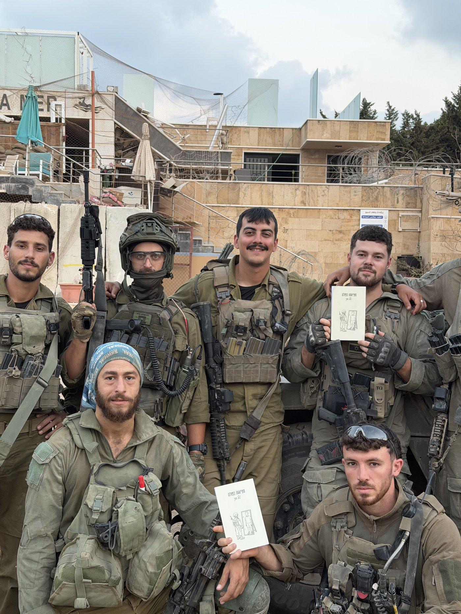
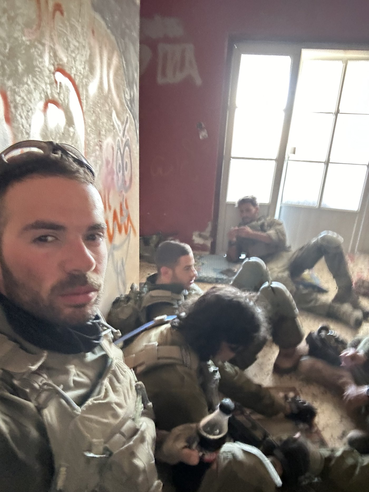
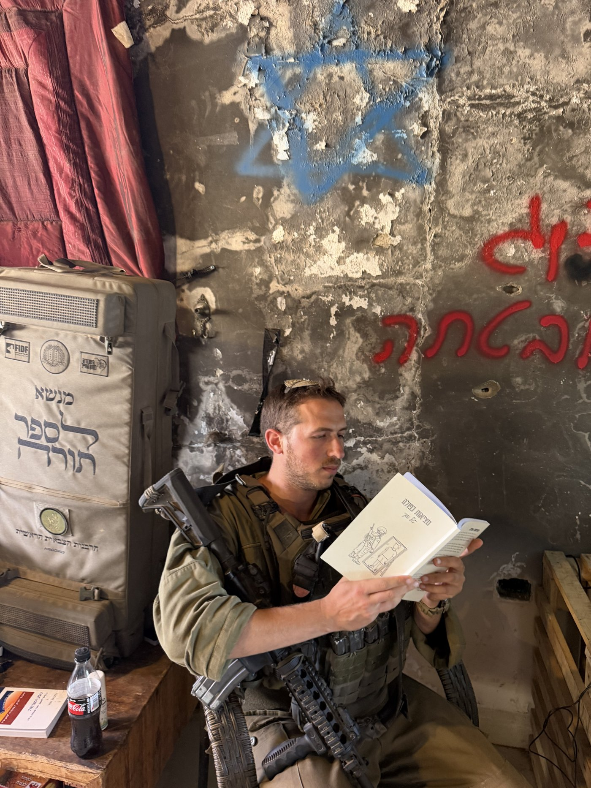
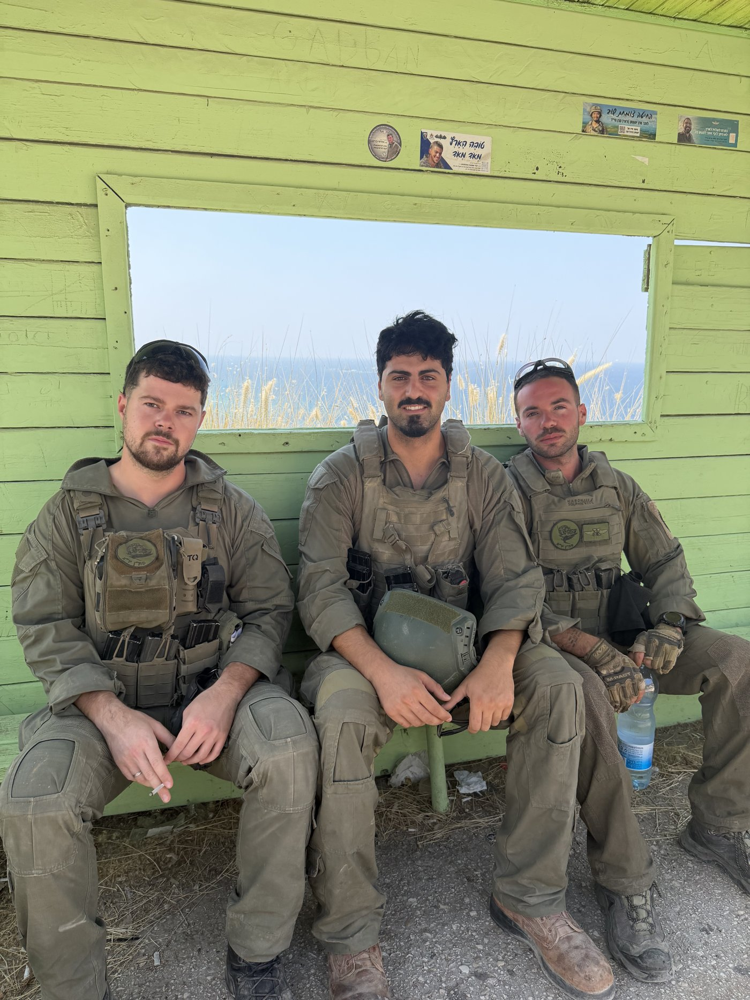
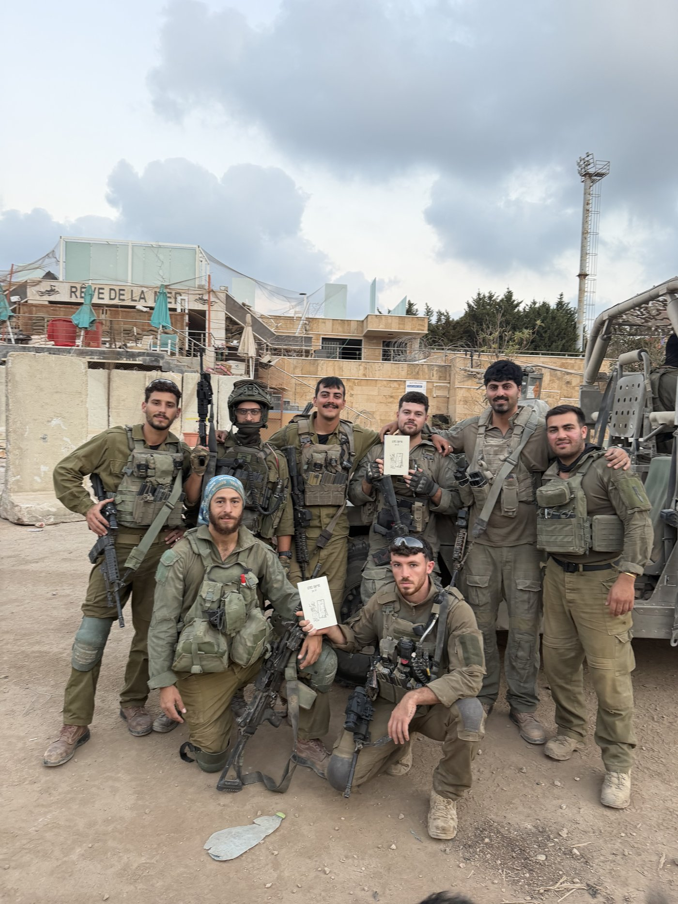
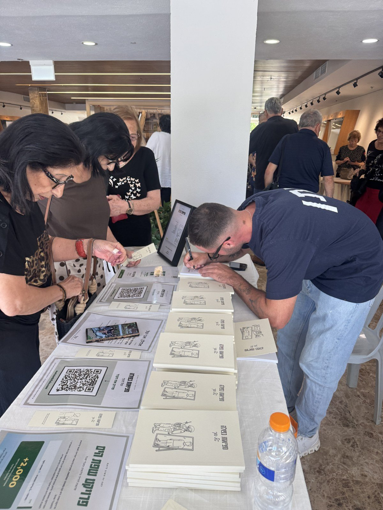
The Hebrew edition has already reached hundreds of readers across Israel.
"I bought it for my husband, who came home from the reserves. He read it in one breath and said: this is exactly what I feel, but could never put into words."
"As a reservist myself, this book made me feel that someone finally understands. Thank you, Tal."
"Written straight from the deepest rooms of the heart. He captured every emotion a fighter carries but can't express."
"I read it in one night. Honest, raw, and moving — and the illustrations add so much. A book for everyone."
"Someone sent me a single line from the book. I ordered it that evening. Now I'm the one sending lines onward."
"I bought it for my father. He called two hours later, his voice breaking, just to say thank you. A rare book."
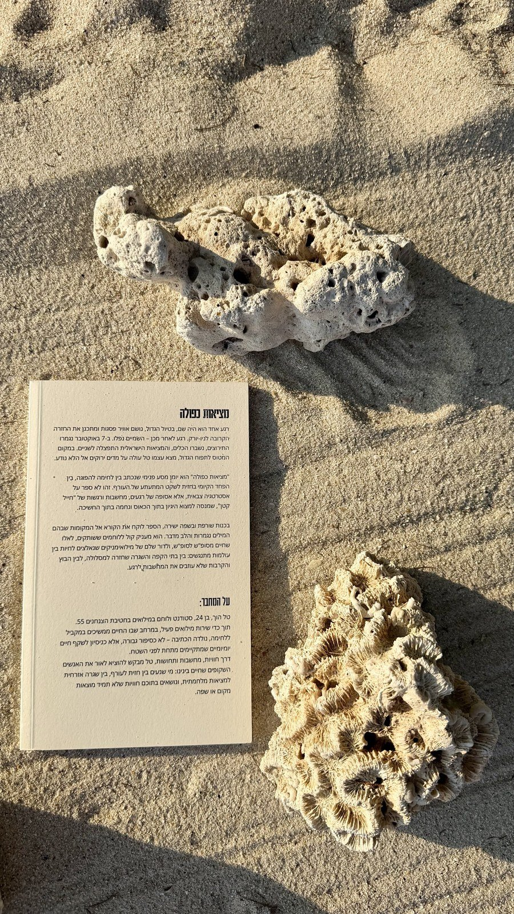
Breath, water, and a way back.
Sfat HaYam ("The Shore") was born during the war. It walks alongside IDF reservists and bereaved families on the hardest road of all — the one back to ordinary life. Through workshops of breathwork, freediving and cold-water immersion, it helps them build personal anchors and the tools to carry what they've seen.
It's the quiet answer to the question at the heart of this book: what we really needed wasn't someone with the right words — it was someone who would simply be there.
Follow @tal_hoch to know the moment it's live.